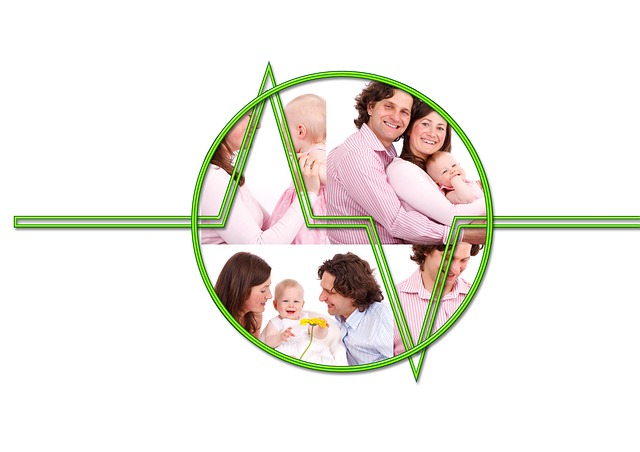

OBJETIVOS
PACIENTE Y FAMILIARES
Movilizar recursos en el paciente y sus familiares para gestionar riesgos en su salud mental
PRACTICANTE
Desarrollar compentencias clínica asociadas a lo educativo y biopsicosocial
INSTITUCIONAL
Promover espacios educativos y psicosociales para impactar calidad de vida de los usuarios-familiares
Reflexiones
Promover reflexiones en el paciente y sus familiares sobre la salud mental
Factores de riesgo y prevención
Favorecer en el paciente y sus familiares la movilización de recursos y habilidades para la gestión de riesgos en salud mental
Educación
Facilitar espacio de aprendizaje y acompañamiento psicosocial para los pacientes y sus familiares
